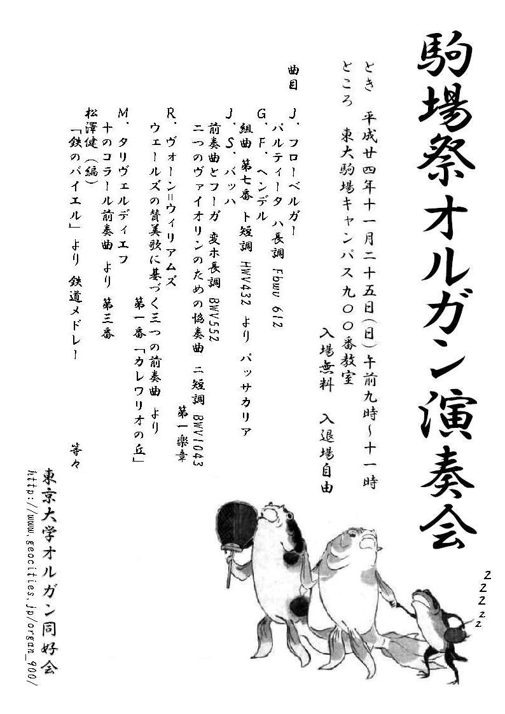

-
□第7回駒場祭オルガン演奏会
2014年11月24日に行われたオルガン演奏会の様子です。
⇒プログラム
♪ゴシック組曲より第４楽章
♪『トッカータ集』第２巻よりトッカータ第５番
-
□第10回オルガン演奏会
2014年6月30日に行われたオルガン演奏会の様子です。
♪ソナタ 変ホ長調 K.370
♪Bull's Good Night
♪グレゴリオ聖歌のテーマにおける８つの短い前奏曲 より Ave Verum Corpus
-
□第６回駒場祭オルガン演奏会
2013年11月23日に行われたオルガン演奏会の様子です。
⇒プログラム
-
□第９回オルガン演奏会
2013年8月4日に行われたオルガン演奏会の様子です。
⇒プログラム
♪トッカータ ニ短調 BWV913
♪彼女は僕の苦しみを
♪コンポステラ組曲 より コラール
-
□第５回駒場祭オルガン演奏会

2012年11月25日に行われたオルガン演奏会の様子です。
⇒プログラム
♪2つのヴァイオリンのための二重協奏曲 より 第1楽章
♪ネヴェル夫人の曲集 より 第36番「気まぐれ」
-
□第８回オルガン演奏会
2012年7月8日に行われたオルガン演奏会の様子です。
⇒プログラム
♪前奏曲 ト短調
♪ロバーツブリッジ写本 より エスタンピ
-
□第７回オルガン演奏会
2012年4月19日に行われたオルガン演奏会の様子です。
演奏者が駒場時代に演奏した楽曲を中心に演奏しました。
⇒プログラム
♪半音階的幻想曲
♪スーパーマリオブラザーズのテーマ(1-1)
-
□女子高校生のための東京大学説明会（2011） 歓迎演奏会
2011年12月24日に開催された女子高校生のための東京大学説明会のオープニング演目として行われたオルガン演奏会の様子です。
⇒プログラム
♪きらきら星変奏曲
-
□第６回オルガン演奏会
2011年12月3日に駒場キャンパスでオルガン演奏会を開催しました。
中世から現代まで、多彩な楽曲を演奏しました。
⇒プログラム
♪「ああ、言っておくれ」
♪亡き王女のためのパヴァーヌ
-
□第１回五月祭オルガン演奏会
2011年5月29日に本郷キャンパスで行われた五月祭と同日に駒場キャンパスでオルガン演奏会を開催しました。
「チャレンジ」をテーマに、上級生たちによる意欲的な選曲の演奏が行われました。
⇒プログラム
♪「ジュ・トゥ・ヴ」
-
□女子高校生のための東京大学説明会（2010） オルガン演奏会
2010年12月19日に開催された女子高校生のための東京大学説明会のオープニング演目として行われたオルガン演奏会の様子です。
オルガン同好会としては異例の大観衆の見守る中、各参加者が得意曲を演奏致しました。
⇒プログラム
♪交響詩「フィンランディア」
-
□第５回オルガン演奏会
2010年12月11日に行われた第５回オルガン演奏会の様子です。
バッハはもとより、スウェーリンク、パッヘルベル、シベリウス、ヨン、更には同好会メンバーによるオリジナル作品まで、様々な曲が演奏されました。
⇒プログラム
♪シチリアのクリスマス
♪3つのヴァイオリンと通奏低音のためのカノンとジーグ ニ長調 より カノン
-
□第４回駒場祭オルガン演奏会
2010年11月22日に行われた駒場祭でオルガン演奏会を開催しました。
１年生のフレッシュな演奏やベテランによる成熟した演奏を会場一杯の来場者の方々に楽しんで頂きました。
⇒プログラム
⇒写真
♪管弦楽組曲第一番BWV1066より序曲 楽譜はこちら
-
□第３回駒場祭オルガン演奏会
2009年11月23日に行われた駒場祭でオルガン演奏会を開催しました。
16世紀から現代まで幅広いレパートリーが披露されました。
⇒プログラム
♪「私のベートーヴェン」
-
□第４回オルガン演奏会
2009年6月23日に行われた第４回演奏会のプログラムです。
定番のバロックに加え、近現代の曲も強化しております。
⇒プログラム
♪「いつか王子様が」
♪歌劇「セルセ」よりラルゴ
-
□第２回駒場祭オルガン演奏会
2008年11月22日に行われた駒場祭でオルガン演奏会を開催しました。
バッハだけでなくスウェーリンク、ラインベルガーなど幅広い作品を披露しました。
⇒プログラム
♪「My Favorite Things」
-
□第１回駒場祭オルガン演奏会
2007年11月23日に行われた駒場祭でオルガン演奏会を開催しました。
バッハの作品で埋め尽くされています。
⇒プログラム
⇒プログラム表紙
⇒写真
♪「Star Wars Main Theme」
-
□第３回オルガン演奏会
2006年10月18日に行われた第３回演奏会の模様です。
スウェーリンクからメンデルスゾーンまで、他ではなかなか聴けない名曲が演奏されました。
⇒プログラム
♪カエルの主題に基づくワルツと葬送曲～そしてヨミガエル～
-
□第２回オルガン演奏会
2005年11月20日に行われた第２回演奏会の模様です。
なぜかマリオをフィーチャーし、ポップな雰囲気です。フルートやヴァイオリンも登場しています。
プログラムと写真でご紹介します。
⇒プログラム
⇒写真
-
□第１回オルガン演奏会
2005年6月22日に行われた、同好会初の演奏会です。
定番のバッハだけでなくドビュッシーやムソルグスキーなど近代の作品も取り上げています。
⇒プログラム
|
|
||||||||||||
|
|
|||||||||||
{kind=link}
{kind=link}
{kind=link}
{kind=link}